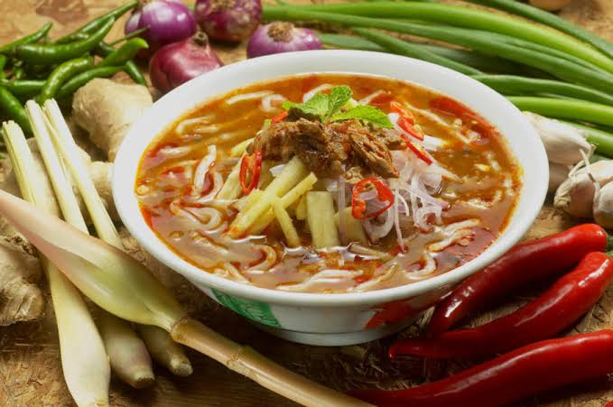

üçö Rice Dishes
Nasi Kerabu
Nasi Kerabu is a Malaysian rice dish featuring blue-colored rice, fresh herbs, and various
accompaniments like fried fish, salted egg, and sambal.
Nasi Kandar
Nasi Kandar is a Malaysian dish of steamed rice served with a variety of
curries and side dishes. It originated from Penang and is known for its flavorful curries.
Hainanese Chicken Rice
Hainanese Chicken Rice is a fragrant dish consisting of poached chicken and
seasoned rice, served with chili sauce and garlic paste. It is a beloved dish across Malaysia and
Singapore.

Nasi Lemak
Nasi Lemak is Malaysia’s national dish made with coconut milk rice,
anchovies, peanuts, boiled egg, cucumber, and sambal. It is usually eaten for breakfast but enjoyed any
time of day.
üçú Noodles
Hokkien Mee
Hokkien Mee is a stir-fried noodle dish popular in Malaysia, made with
yellow noodles, prawns, squid, pork, and a rich dark soy sauce.

Assam Laksa
Assam Laksa is a tangy and spicy noodle soup from Penang, made with mackerel
fish, tamarind, and served with thick rice noodles and fresh herbs.
Prawn Mee
Prawn Mee is a flavorful noodle soup made with prawn stock, noodles, bean
sprouts, and topped with prawns and pork slices. It is popular in Malaysia and Singapore.

Char Kuey Teow
Char Kuey Teow is a stir-fried flat rice noodle dish with prawns, Chinese
sausage, eggs, bean sprouts, and soy sauce. Famous for its smoky 'wok hei' flavor.
üç® Desserts
ABC Dessert
ABC (Ais Batu Campur) is a Malaysian shaved ice dessert with sweet syrup,
red beans, jelly, corn, and condensed milk. Refreshing and colorful.
Pisang Goreng
Pisang Goreng is a popular Malaysian snack made from deep-fried banana
fritters, often served with sugar or chocolate.
Kuih Lapis
Kuih Lapis is a colorful Malaysian layered steamed cake made with rice
flour, coconut milk, and sugar. It’s soft, sweet, and chewy.
Cendol
Cendol is a traditional Malaysian dessert of shaved ice, coconut milk, green
rice flour jelly, and palm sugar syrup. Refreshing and sweet.
üçü Snacks
Roti Tissue Twin Tower
Roti Tissue is a thin, crispy Malaysian flatbread dessert, often served with
condensed milk or sugar. Twin Tower refers to serving two stacked pieces.
Ramly Burger
Ramly Burger is a famous Malaysian burger, often fried with an egg and
wrapped in a special sauce, sold at street food stalls.

Keropok Lekor
Keropok Lekor is a traditional Malaysian fish snack made from fish and sago
flour, usually deep-fried or boiled and served with spicy sauce.
Mamee Monster
Mamee Monster is a fun Malaysian snack of crispy noodle-like sticks and
seasoning powder, usually eaten straight from the packet.